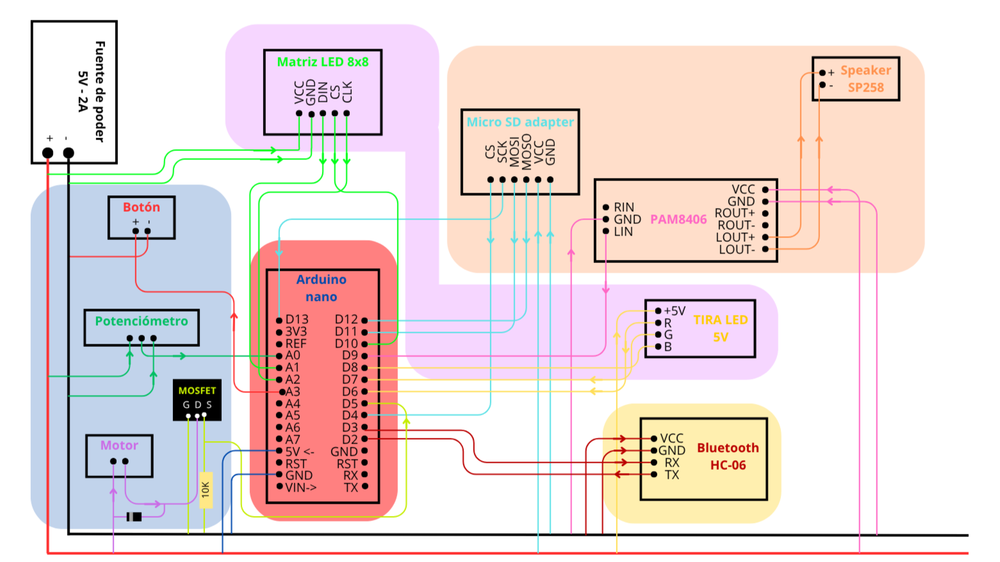

Context
STEM Mario Maker is a multisensory tool designed for children with Down Syndrome. It bridges the gap between digital puzzles in an app and physical mechanical movement. By solving challenges about "how things move," users unlock the power to activate a physical toy, reinforcing cognitive links through immediate reward.
The Challenge
The main hurdle was translating abstract geometry into tangible mechanics. We needed to ensure that children (ages 9-13) could understand that changing a physical part (the biela) directly affected the character's movement, all while keeping the system lag-free and the interaction physically accessible for their motor skills.
